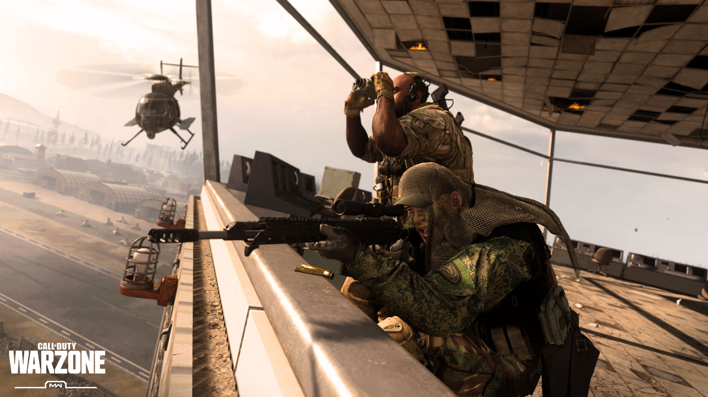

Call of Duty este un joc FPS(first person shooter) si blattle royal, care a fost lansat pe 10 Martie 2010 pe toate platoformele(Xbox, Playstation 4 Windows etc).Il poti instala gratis, de pe Blizzard.Net.
Acest joc a avut doar review-uri pozitive, ajungand la peste 60 de milioane de instalari in mai putin de 2 luni, iar in Decembrie 2020 a ajuns la 85 de milioane de jucatori din intreaga lume,lucru pe care foarte putine jocuri au reusit sa il faca.
Gameplay: In Call of Duty sunt mai multe moduri de joc. Modul principal este Battle Royale-ul in care 150 de jucatori(solo, duo, trio, sau squad) se lupta pe o harta. Harta se numeste Verdansk, bazate pe orasul Donetsk. Jucatorii se arunca cu parasuta dintr-un avion alegandu-si la inceputul meciului locatia de aterizare. Dupa ce aterizeaza, ei trebuie sa cauta arme si armuri cu care se pot lupta cu inamicii. Cu cat trece timp de cand esti in meci, zona in care te poti concentra doar pe inamici se restrange, fiind inconjurata de un fum foarte toxic si puternic, care te poate omori daca stai mai mult de 10 secunde in el.(poti sta pana la 30 de scunde,daca ai noroc sa gasesti o masca de gaze). Ca sa castigi la acest mod trebuie sa ramai ultimul in viata sau echipa ta sa ramana ultima.Alt mod este storymode-ul(povestea jocului) in care tu joci singleplayer si faci misiuni pana le termini, in care poti afla povestile caracterelor sau a razboaielor din joc.
Ultimul mod il reprezinta cel cu zombi in care va puteti aduna pana la 4 prieteni si sa completati tot un fel de poveste doar ca cu zombi. Acest mod este mult mai interesant si te tine in tensiune mereu.
